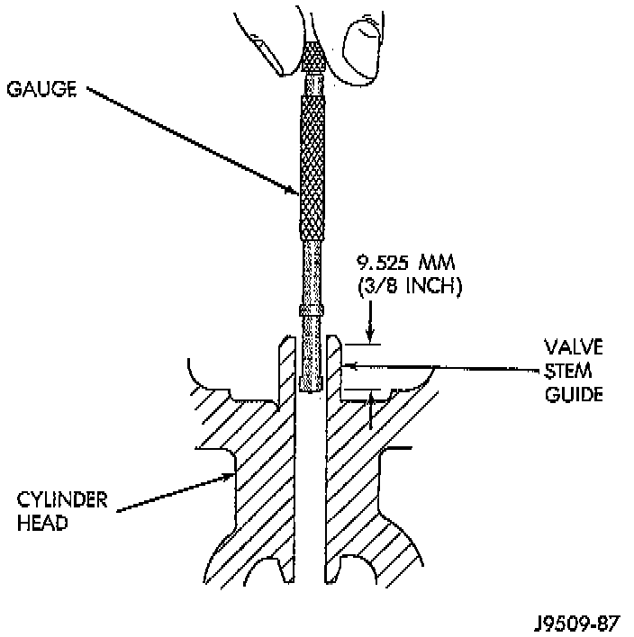
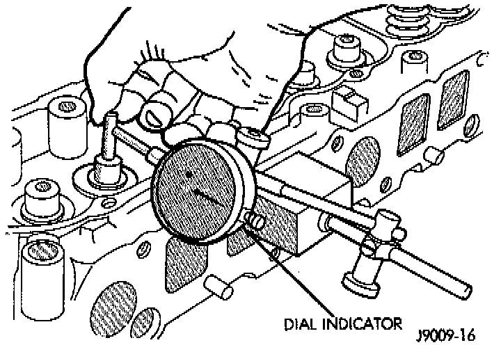

Valve Guide: Service and Repair
NOTE: Valve stem-to-guide clearance may be measured by either of the following two methods.
PREFERRED METHOD
1. Remove the valve from the head.
2. Clean the valve stem guide bore with solvent and a bristle brush.
3. Insert a telescoping gauge into the valve stem guide bore approximately 9.525 mm (0.375 inch) from the valve spring side of the head.
4. Remove and measure telescoping gauge with a micrometer.
5. Repeat the measurement with contacts lengthwise to engine cylinder head.
6. Compare the crosswise to lengthwise measurements to determine out-of-roundness. If the measurements differ by more than 0.0635 mm (0.0025 inch), ream the guide bore to accommodate an oversize valve stem.
7. Compare the measured valve guide bore diameter with specifications 7.95 - 7.97 mm (0.313 - 0.314 inch). If the measurement differs from specification by more than 0.076 mm (0.003 inch), ream the guide bore to accommodate an oversize valve stem.

ALTERNATIVE METHOD
1. Use a dial indicator to measure the lateral movement of the valve stem (stem-to-guide clearance). This must be done with the valve installed in its guide and just off the valve seat.
2. Correct clearance is 0.025 - 0.0762 mm (0.001 - 0.003 inch). If indicated movement exceeds the specification ream the valve guide to accommodate an oversize valve stem.
NOTE: Valve seats must be ground after reaming the valve guides to ensure that the valve seat is concentric to the valve guide.